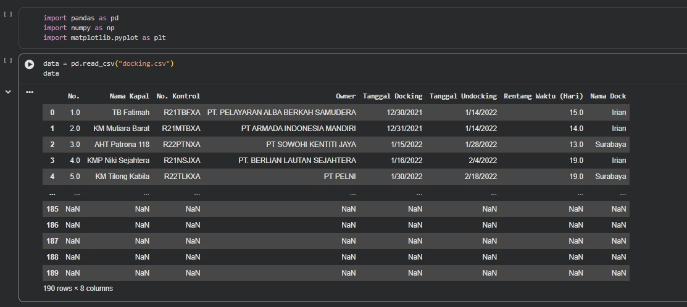
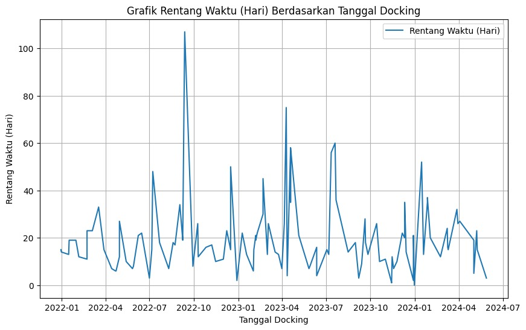
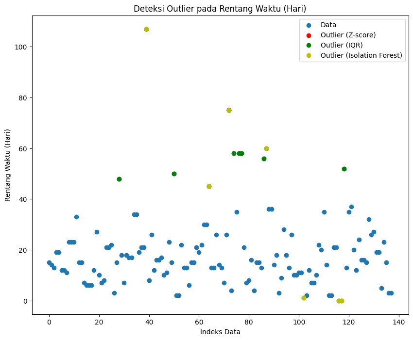
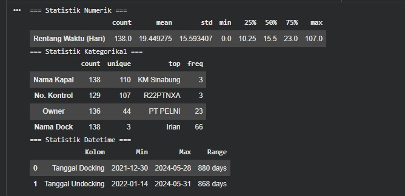
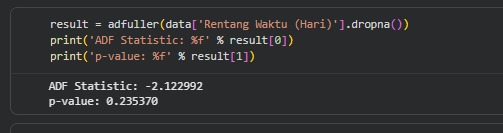
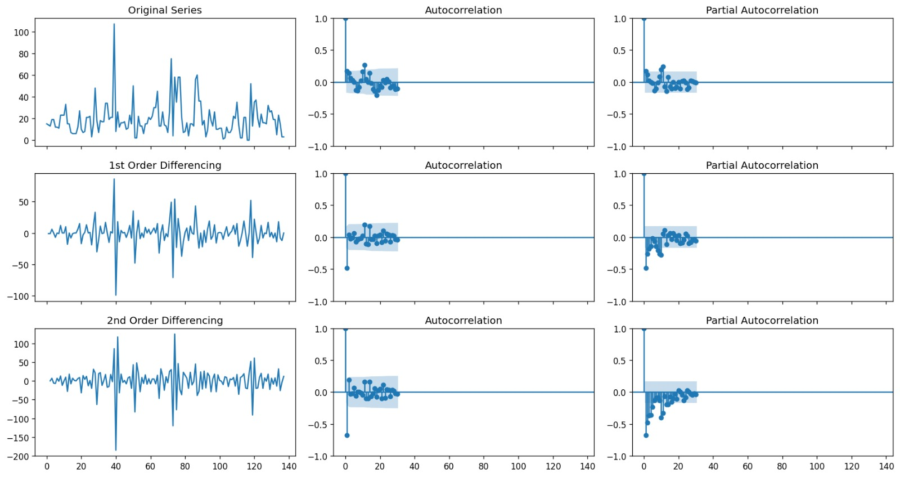
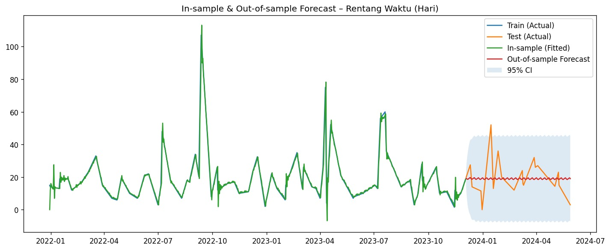
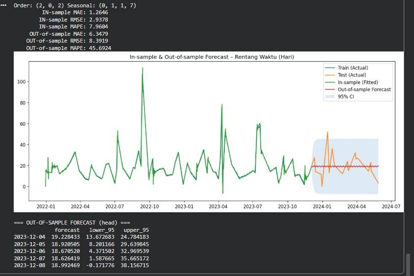

Ship Docking Duration Analysis & Forecasting
Project Overview
This project analyzes ship docking records to understand docking duration patterns, identify abnormal docking time, and forecast future docking duration. The analysis supports operational monitoring by transforming historical docking data into useful insights for planning and decision-making.
The analysis includes data cleaning, descriptive statistics, outlier detection, stationarity testing, time-series diagnostics, and forecasting using ARIMA/SARIMA-based modeling.
Objectives
- Analyze historical ship docking duration patterns.
- Clean and prepare docking data for analysis.
- Detect abnormal docking durations using statistical and machine learning methods.
- Evaluate time-series characteristics using stationarity and autocorrelation analysis.
- Forecast future docking duration to support operational planning.
Tools & Technologies
Analysis Documentation
1. Data Preparation
The dataset was cleaned by handling missing values, converting docking and undocking dates into datetime format, and validating docking duration values. This step ensures the data is ready for further statistical and time-series analysis.

Dataset Preview
2. Docking Duration Trend
A time-series visualization was created to observe docking duration over time. This helps identify whether docking duration shows increasing, decreasing, seasonal, or irregular patterns.

Docking Duration Over Time
3. Outlier Detection
Outlier detection was performed using Z-score, IQR, and Isolation Forest to identify abnormal docking durations. These anomalies may indicate unusual operational conditions, delayed processes, or data irregularities that require further investigation.

Outlier Detection Result
4. Descriptive Statistics
Descriptive statistics were used to summarize numerical, categorical, and date-based information. This provides a clearer understanding of docking duration range, vessel records, owners, docking locations, and date coverage.

Numerical Statistics
5. Time-Series Diagnostics
The stationarity of docking duration was evaluated using the Augmented Dickey-Fuller test. ACF and PACF plots were also used to understand autocorrelation patterns and support ARIMA/SARIMA model selection.

Stationarity Test

ACF & PACF Diagnostics
6. Forecasting Result
ARIMA/SARIMA-based forecasting was applied to estimate future docking duration. The result can support docking schedule planning, resource allocation, and early identification of possible operational delays.

Actual vs Forecast

Forecast Evaluation
Results & Impact
- Identified docking duration patterns from historical ship docking data.
- Detected abnormal docking durations using multiple outlier detection methods.
- Evaluated time-series behavior through stationarity and autocorrelation analysis.
- Built forecasting analysis to estimate future docking duration.
- Provided analytical insights to support docking planning and operational monitoring.
GitHub Repository
Source code and project implementation are available on GitHub.
View Source Code on GitHub →